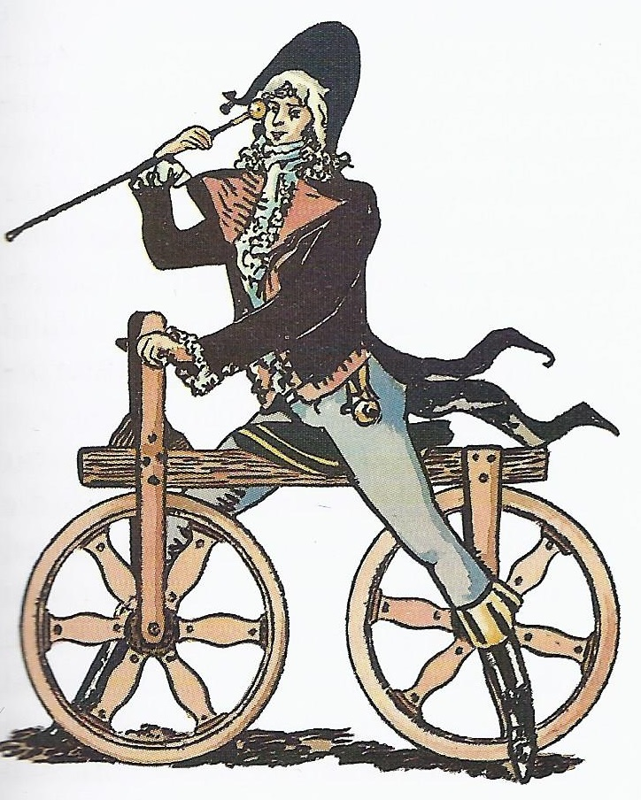
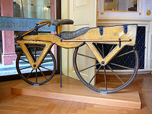
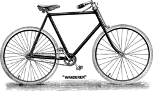

Sus componentes básicos son dos ruedas, generalmente de igual diámetro y dispuestas en línea, un sistema de transmisión de pedales, un cuadro que le da la estructura e integra los componentes, un manillar para controlar la dirección y un sillín para sentarse. El desplazamiento unidireccional se obtiene al girar con las piernas los pedales dispuestos de forma simétrica, cada uno con una palanca conocida como manivela están ensamblados en el cuadro, y en general el pedal derecho es el que tiene la estrella mayor o plato donde se monta la cadena que a su vez hace girar el piñón, el cual finalmente hace girar la rueda trasera sobre el suelo provocando entonces el desplazamiento. Fuente: Wikipedia
Hasta la segunda mitad del siglo XX, se aceptó que el primer antecedente de la bicicleta era el celerífero(célérifère) inventado en 1790 por el conde francés Mede de Sivrac, el cual consistía en un listón de madera terminado en una cabeza de animal montado sobre dos ruedas. No tenía articulación alguna y era propulsado por una persona sentada a horcajadas, impulsándose con sus propios pies. En los años 1950, sin embargo, se descubrió que ni el conde Mede Sivrac, ni su invención existieron; ambos fueron creados en 1891 por el periodista francés Louis Baudry de Saunier (1865-1938), copiando el diseño de Karl Drais y basándose en una patente de 1817 para un coche de caballos llamado celerífero.
En 1817, el barón alemán Karl Christian Ludwig Drais von Sauerbronn inventó el primer vehículo de dos ruedas, al que llamó máquina andante (en alemán, laufmaschine), precursora de la bicicleta y la motocicleta. Esta «máquina andante» consistía en una especie de carrito de dos ruedas, colocadas una detrás de otra, y un manillar. La persona se mantenía sentada sobre una pequeña montura, colocada en el centro de un pequeño marco de madera. Para moverse, empujaba alternativamente con el pie izquierdo y el derecho hacia adelante, en forma parecida al movimiento de un patinador. Con este impulso, el vehículo adquiría una velocidad casi idéntica a la de un carruaje.
La construcción de la primera bicicleta con pedales se atribuye al escocés Kirkpatrick Macmillan, en el año 1839. Una copia de la bicicleta de Macmillan se exhibe en el Museo de Ciencias en Londres, Inglaterra. Macmillan nunca patentó el invento, que posteriormente fue copiado en 1846 por Gavin Dalzell de Lesmahagow, quien lo difundió tan ampliamente que fue considerado durante cincuenta años el inventor de la bicicleta.
| Característica | Bicicleta Doméstica | Bicicleta de Montaña | Bicicleta de Carreras |
|---|---|---|---|
| Uso principal | Paseos urbanos y recreativos | Terrenos irregulares, montaña y campo | Carreteras y velocidad |
| Peso | Medio | Pesada (por resistencia y suspensión) | Muy ligera (materiales como carbono) |
| Precio típico | Bajo a medio | Medio a alto | Medio a muy alto |
| Versatilidad | Alta en ciudad, limitada fuera de ella | Alta en todo tipo de terreno | Limitada fuera de asfalto |